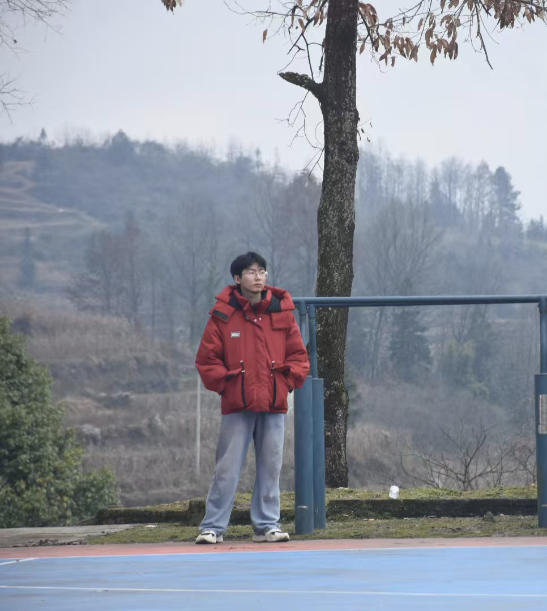

❀ 姓名：高锦涛
✿ 南京理工大学--计算机科学与技术专业
普普通通啊，大学里也没自己做过什么项目，基本都是些课程设计啥的。
怎么大学四年就剩最后一学期了，突发奇想做个主页。以后大概率也和程序员渐行渐远了，目前找的工作不是纯开发的（ecoflow，不知道有没有同僚？），写代码以后就是纯爱好了（好吧也没多爱）。
一直以来确实感觉过的有点平凡无聊（倒也不是多不满，主要是没有对比就没有伤害），好吧，默默下个决心，工作挣钱然后爽玩^_^

一张近照
gjt221@qq.com
gaojiintao@gmail.com
BAICI123.github.io